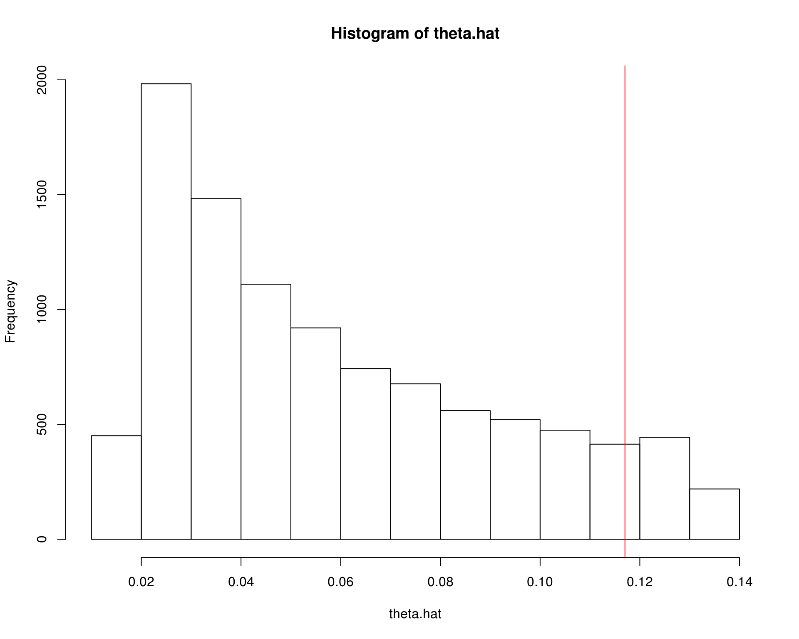
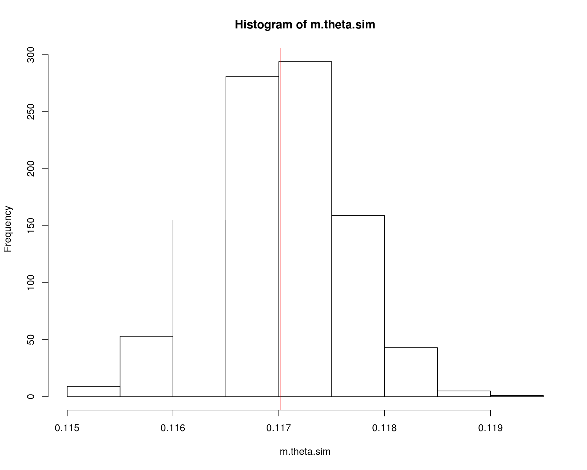

Métodos de Monte Carlo
Fernando P. Mayer
Monte Carlo methods are experiments.
Gentle, J. (2009)
1 Introdução
Duas grandes classes de problemas numéricos que surgem na inferência estatística são: problemas de otimização, e problemas de integração. De fato, diversos exemplos mostram que nem sempre é possível calcular analiticamente os estimadores associados à um determinado paradigma (máxima verossimilhança, bayesiano, método dos momentos, etc).
Experimentação de Monte Carlo significa o uso de valores aleatórios para a estimação de alguma função de uma distribuição de probabilidade. Um problema que não possui um componente estocástico pode ser colocado como um problema com um componente que pode ser identificado como a esperança de uma função de uma variável aleatória (VA). Isso pode ser feito através da decomposição de uma função densidade de probabilidade. O problema é então resolvido pela estimação do valor esperado por meio do uso de uma amostra aleatória da distribuição da VA.
O termo “Método de Monte Carlo” surgiu no laboratório nacional de Los Alamos (EUA), no final dos anos 1940, durante o desenvolvimento de uma bomba atômica (Metropolis e Ulam, 1949). O termo “Monte Carlo” faz referência à cidade famosa por seus cassinos, que fazem uso de mecanismos “aleatórios” para jogos. O desenvolvimento destes métodos também contribuíram fortemente para o desenvolvimento dos primeiros computadores eletrônicos, acelarando a computação de tarefas numéricas repetitivas.
Não existe um consenso em como os métodos de Monte Carlo poderiam ser definidos, mas algumas distinções podem ser feitas:
- Simulação: Sortear um valor de uma \(U(0,1)\) pode simular o lançamento de uma moeda: se for menor do que 0.5, atribua cara, caso contrário, coroa.
- Método de Monte Carlo: Derramar uma caixa de moedas em uma mesa e calcular a proporção de moedas que caem cara ou coroa.
- Simulação de Monte Carlo: Sortear um grande número de valores de uma \(U(0,1)\) e atribuir cara (menor que 0.5) ou coroa.
Os métodos de Monte Carlo também podem ser divididos em duas categorias:
- Integração de Monte Carlo: quando utilizado para resolver problemas de integração numérica
- Simulação de Monte Carlo: quando utilizado para resolver problemas mais gerais através de simulação
2 Integração de Monte Carlo
A integração de Monte Carlo é uma técnica numérica que se baseia em amostragem aleatória para aproximar um resultado, aplicando esse processo para a estimação numérica de integrais.
De maneira geral, um probelma de inferência estatística pode ser formulado como a estimação de uma integral do tipo \[ \theta = \int_{D} h(x) \text{d}x \] Se a integral possui forma fechada, então não há necessidade de qualquer método de aproximação. Caso não seja possível resolver a integral de forma analítica, e se \(D\) for de uma ou duas dimensões, então existem diversos métodos de quadratura para aproximar o valor dessa integral. Por exemplo:
- Método trapezoidal
- Método de Simpson 1/3
- Quadratura de Gauss-Hermite
- Aproximação de Laplace
No entanto, quando a dimensão em \(D\) for alta, a integração de Monte Carlo é uma alternativa mais viável (que pode ser usada em problemas de baixa dimensão também).
Se a função \(h\) for decomposta de forma a ter um componente que é uma densidade de probabilidade, ou seja, \[ h(x) = g(x)f(x) \] onde \(\int_{D} f(x) dx = 1\) e \(f(x) \geq 0\), então a integral \(\theta\) pode ser vista como a esperança da VA \(Y = g(x)\), onde \(X\) tem distribuição \(f(x)\), ou seja, \[ \theta = \text{E}[g(X)] = \int_{D} g(x)f(x) dx. \] Com uma amostra aleatória \(x_1, \ldots, x_m\) da distribuição \(f(x)\) da VA \(X\), então uma estimativa não viesada de \(\theta\) é a média amostral \[ \hat\theta = \frac{1}{m} \sum_{i=1}^{m} g(x_i) \]
Essa técnica é usada em muitas situações em estatística. Resumindo, temos os seguintes passos:
- Decomponha a função de interesse para incluir uma função densidade de probabilidade.
- Identifique o valor esperado.
- Use uma amostra aleatória para estimar o valor esperado.
Note então que, na integração de Monte Carlo, trocamos um problema de resolver uma integral por um problema de calcular uma média (por simulação).
2.1 Integração simples de Monte Carlo
Considere o problema de estimar \[\begin{align*} \theta &= \int_0^1 h(x) dx \\ &= \int_0^1 g(x)f(x) dx \end{align*}\] Nesse caso, podemos assumir que \(f(x)\) é a densidade de uma distribuição uniforme \(\text{U}(0,1)\), portanto \(f(x) = 1\), e consequentemente a integral simplifica para \[ \theta = \int_0^1 g(x) dx \] Se \(X_1, \ldots, X_m\) é uma amostra aleatória de \(U(0,1)\), então \[ \hat\theta = \frac{1}{m} \sum_{i=1}^{m} g(x_i) \] Pode-se mostrar que \(\hat\theta\) converge para \(\text{E}[\hat\theta] = \theta\) quando \(m \to \infty\) com probabilidade 1, pela Lei Forte dos Grandes Números.
Sejam \(X_1, \ldots, X_n\) VAs iid com \(\text{E}[X] = \mu\) e \(\text{Var}[X] = \sigma^2\), e definimos \(\bar{X}_n = \frac{1}{n}\sum_{i=1}^n X_i\). Então, para cada \(\epsilon > 0\), \[ P(\lim_{n \to \infty} |\bar{X}_n - \mu| < \epsilon) = 1 \] isto é, converge quase certamente para \(\mu\).
Por exemplo, obtenha uma estimativa de \[ \theta = \int_0^1 e^{-x} dx \]
## Obtem m valores da U(0,1)
m <- 10000
x <- runif(m)
## Calcula g(x)
theta.hat <- exp(-x)
## Calcula a média
(m.theta.hat <- sum(theta.hat)/m)
# [1] 0.6322756Nesse caso, podemos obter a solução analítica e integração numérica no R para comparar as estimativas
## Solução analítica
(theta <- 1 - exp(-1))
# [1] 0.6321206
## Integração numérica no R
integrate(function(x) exp(-x), lower = 0, upper = 1)
# 0.6321206 with absolute error < 7e-15Um caso mais geral é estimar a integral do tipo
\[\begin{align*} \theta &= \int_a^b h(x) dx \\ &= \int_a^b g(x)f(x) dx \end{align*}\]
Nesse caso, temos que substituir a \(U(0,1)\), assumida incialmente para \(f(x)\), por alguma outra densidade com suporte no intervalo dos limites de integração. Por exemplo, se \(X \sim U(a,b)\), então \(f(x) = \frac{1}{b-a}\) e
\[\begin{align*} \theta &= \int_a^b g(x) f(x) dx \\ &= (b-a) \int_a^b g(x) \frac{1}{b-a} dx \\ &= (b-a) \text{E}[g(X)] \end{align*}\]
Visualmente, temos a seguinte situação:

O que temos, na verdade, é a soma de \(m\) áreas de retângulos, que no final, tendem a reproduzir a área da função desejada.
 (Figuras extraídas de https://www.scratchapixel.com).
(Figuras extraídas de https://www.scratchapixel.com).
De maneira geral, para calcular \(\theta = \int_a^b g(x) dx\):
- Gere \(X_1, \ldots, X_m\) de \(U(a,b)\)
- Calcule \(\overline{g(x)} = \frac{1}{m}\sum_{i=1}^{m} g(x_i)\)
- \(\hat\theta = (b-a)\overline{g(x)}\)
Por exemplo, obtenha uma estimativa de \[ \theta = \int_2^4 e^{-x} dx \]
## Obtem m valores da U(2,4)
m <- 10000
a <- 2; b <- 4
x <- runif(m, min = a, max = b)
## Calcula g(x)
theta.hat <- exp(-x)
## Calcula a média * (b - a)
(m.theta.hat <- (sum(theta.hat)/m) * (b - a))
# [1] 0.1160224Nesse caso, podemos obter a solução analítica e integração numérica no R para comparar as estimativas
## Solução analítica
(theta <- exp(-2) - exp(-4))
# [1] 0.1170196
## Integração numérica no R
integrate(function(x) exp(-x), lower = 2, upper = 4)
# 0.1170196 with absolute error < 1.3e-15Vemos que, nos dois casos acima, estamos na verdade obtendo uma estimativa das probabilidades \(P[0<X<1]\) e \(P[2<X<4]\), respectivamente.
No entanto, se quisermos calcular a seguinte probabilidade \[ P[X>2] = \int_2^{\infty} e^{-x} dx \]
Nesse caso, a integração simples de Monte Carlo não é útil, pois não é possível que o limite de integração seja indefinido.
Na verdade, podemos pensar em uma aproximação grosseira, supondo que vamos amostrar de \(X \sim \text{U}(2, \infty)\), onde podemos aproximar o valor de \(\infty\) por um número grande. Por exemplo:
## Obtem m valores da U(2,Inf)
m <- 10000
x2 <- runif(m, min = 2, max = 1e5)
## Calcula g(x)
theta.hat2 <- exp(-x2)
## Calcula a média * (b - a)
(m.theta.hat2 <- (sum(theta.hat2)/m) * (1e5 - 2))
# [1] 0.0006736957
## Solução analítica
(theta2 <- exp(-2) - exp(-1e5))
# [1] 0.1353353
## Usando a exponencial
pexp(2, 1, lower.tail = FALSE)
# [1] 0.1353353Note que o valor estimado nesse caso está longe do velor correto, pois estamos adotando um procedimento completamente arbitrário.
2.2 Variância do estimador de Monte Carlo
Como \(\hat\theta\) é resultado de uma amostra aleatória de \(m\) valores, naturalmente, cada amostra poderá gerar uma estimativa (razoavelmente) diferente, e sempre existirá uma variabilidade dos valores amostrados ao redor da média, que é o \(\hat\theta\).
A variância de \(\hat\theta\) é \[ \hat{V}(\hat\theta) = \frac{\sigma^2}{m} = \frac{\sum_{i=1}^m [g(x_i) - \overline{g(x)}]^2}{m^2} \] Portanto, o erro padrão da estimativa será \[ \hat{EP}(\hat\theta) = \frac{\hat\sigma}{\sqrt{m}} = \frac{\sqrt{\sum_{i=1}^m [g(x_i) - \overline{g(x)}]^2}}{m} \]
Seguindo o exemplo anterior, vimos que a estimativa da integral é
Mas veja que existe uma distribuição de valores para compor esta estimativa média

A variância relacionada ao estimador pode então ser calculada como
## Variancia
(v.theta.hat <- sum((theta.hat - m.theta.hat)^2)/m^2)
# [1] 4.431714e-07
## Erro padrão
(se.theta.hat <- sqrt(v.theta.hat))
# [1] 0.0006657112Pelo Teorema do Limite Central, temos que
\[ \frac{\hat\theta - \text{E}(\hat\theta)}{\sqrt{\hat{V}(\hat\theta)}} \] converge em distribuição para \(N(0,1)\) quando \(m \to \infty\). Portanto, para \(m\) suficientemente grande, \(\hat\theta\) é aproximadamente Normal com média \(\theta\).
## Simula 1000 médias
r <- 1000
res <- matrix(runif(m * r, a, b), nrow = m, ncol = r)
m.theta.sim <- apply(res, 2, function(x) mean(exp(-x)) * (b - a))
hist(m.theta.sim); abline(v = theta, col = 2)
Com esse resultado, podemos inclusive fornecer um intervalo de confiança associado à nossa estimativa
## Media e veriancia
c(m.theta.hat, v.theta.hat)
# [1] 1.160224e-01 4.431714e-07
## Intervalo de confiança (95%)
c(m.theta.hat - 1.96 * se.theta.hat, m.theta.hat + 1.96 * se.theta.hat)
# [1] 0.1147176 0.1173271Veja que assintoticamente, i.e., conforme aumentamos o tamanho da amostra, o valor da integral se aproxima cada vez mais do valor verdadeiro (que nesse caso sabemos calcular analiticamente, apenas para comparação).
## Simula a convergência para o verdadeiro valor conforme aumenta o
## tamanho da amostra
nsamp <- 1e4
set.seed(19)
x <- exp(-runif(nsamp, a, b))
estint <- (cumsum(x) * (b - a))/(1:nsamp)
esterr <- sqrt(cumsum((x - estint)^2))/(1:nsamp)
plot(estint, ylim = c(.05, .15), type = "l",
xlab = "Tamanho da amostra", ylab = "Estimativa")
abline(h = theta, col = 2)
lines(estint - 1.96 * esterr, lty = 2)
lines(estint + 1.96 * esterr, lty = 2)
2.3 Redução da variância
Note que, embora a variância do estimador do exemplo anterior pareça pequena, o método simples de Monte Carlo não é o método mais eficiente, ou seja, aquele que provê estimativas com a menor variância possível. Isso porque, como vimos, estamos supondo uma distribuição Uniforme no intervalo \((a,b)\), para qualquer que seja o formato da função que temos interesse em integrar.
A redução da variância é importante pois sempre estamos interessados em obter estimativas que sejam mais precisas possíveis, evitando erros numéricos ou de aproximações.
Existem várias adaptações para o método simples de Monte Carlo, com a intenção de se obter estimativas mais precisas, i.e., com menor variância. Alguns deles são:
- Variáveis antitéticas
- Variáveis de controle
- Amostragem por importância
2.4 Amostragem por importância
Limitações do método simples de Monte Carlo:
- Não se aplica para intervalos não definidos
- É ineficiente quando a função \(g(x)\) não é uniforme
Quando consideramos um problema de integração como um problema de valor esperado, é natural que consideremos outras funções de densidade além da Uniforme. Isso leva à um método mais geral chamdo de amostragem por importância.
A amostragem por importância reduz a variância pelo fato de podermos escolher uma densidade \(f(x)\) mais parecida com com a função \(g(x)\) sendo integrada. Ao escolher uma densidade mais parecida, a variância é reduzida. Intuitivamente, a amostragem por importância tende a gerar mais amostra onde a contribuição para a integral é maior, ou “importante”. Se pudermos determinar as regiões mais importantes para a integração, a variância do estimador de Monte Carlo pode ser significativamente reduzida.
(Figura extraída de https://www.scratchapixel.com).
Suponha que \(X\) seja uma VA com densidade \(f(x)\). Seja \(Y = g(X)/f(X)\), então \[ \int g(x) dx = \int \frac{g(x)}{f(x)} f(x) dx = \text{E}[Y] \] Com isso, podemos estimar \(\text{E}[Y]\) como uma integração simples de Monte Carlo, ou seja, \[ \frac{1}{m}\sum_{i=1}^{m} Y_i = \frac{1}{m}\sum_{i=1}^{m} \frac{g(X_i)}{f(X_i)} \] onde as VAs \(X_1, \ldots, X_m\) são geradas a partir da distribuição de \(f(x)\). A função \(f(x)\) é chamada de função de importância.
No método de amostragem por importância, a variância do estimador baseado em \(Y= g(X)/f(X)\) é \(\text{Var}(Y)/m\), então a variância de \(Y\) deve ser pequena, conforme \(m\) aumenta.
Na verdade, a variância de \(Y\) é pequena, se \(Y\) for aproximadamente constante, o que significa que a densidade \(f(x)\) deve estar “próxima” da densidade de \(g(x)\). Também é importante que a função \(f(x)\) seja fácil de simular.
Exemplo: Considere estimar a integral \[ \theta = \int_0^1 \frac{e^{-x}}{1+x^2} dx \] pelo método de amostragem por importância. Diversas funções de importância podem ser propostas para esse caso:
\[\begin{align*} f_0(x) &= 1, \quad 0<x<1 \\ f_1(x) &= e^{-x}, \quad 0<x<\infty \\ f_2(x) &= (1+x^2)^{-1}/\pi, \quad -\infty<x<\infty \\ f_3(x) &= e^{-x}/(1-e^{-1}), \quad 0<x<1 \\ f_4(x) &= 4(1-x^2)^{-1}/\pi, \quad 0<x<1 \\ \end{align*}\]
Alguns detalhes:
- \(f_1\) e \(f_2\) possuem domínio maior, o que irá contribuir com muitos zeros (ineficientes)
- \(f_1\) é uma Exponencial com \(\lambda = 1\)
- \(f_2\) é uma Cauchy padrão
- \(f_3\) e \(f_4\) não são funções conhecidas, por isso precisamos usar o método da transformação integral de probabilidade para gerar números destas distribuições
Graficamente temos o seguinte cenário:
x <- seq(0, 1, .01)
w <- 2
f1 <- exp(-x)
f2 <- (1 / pi) / (1 + x^2)
f3 <- exp(-x) / (1 - exp(-1))
f4 <- 4 / ((1 + x^2) * pi)
g <- exp(-x) / (1 + x^2)
par(mfrow = c(1, 2))
plot(x, g, type = "l", main = "", ylab = "g(x)",
ylim = c(0,2), lwd = 2)
lines(x, g/g, col = 2, lwd = w)
lines(x, f1, col = 3, lwd = w)
lines(x, f2, col = 4, lwd = w)
lines(x, f3, col = 5, lwd = w)
lines(x, f4, col = 6, lwd = w)
legend("topright", legend = c("g", 0:4),
col = 1:6, lwd = w, inset = 0.02)
plot(x, g, type = "l", main = "", ylab = "g(x)/f(x)",
ylim = c(0,3.2), lwd = w)
lines(x, g/f1, col = 3, lwd = w)
lines(x, g/f2, col = 4, lwd = w)
lines(x, g/f3, col = 5, lwd = w)
lines(x, g/f4, col = 6, lwd = w)
legend("topright", legend = c(0:4),
col = 2:6, lwd = w, inset = 0.02)
par(mfrow = c(1, 1))m <- 10000
theta.hat <- se <- numeric(5)
g <- function(x) {
## exp(-x - log(1+x^2)) * (x > 0) * (x < 1)
exp(-x)/(1 + x^2) * (x > 0) * (x < 1)
}
x <- runif(m) # usando f0
fg <- g(x)
theta.hat[1] <- mean(fg)
se[1] <- sd(fg)
x <- rexp(m, 1) # usando f1
fg <- g(x) / exp(-x)
theta.hat[2] <- mean(fg)
se[2] <- sd(fg)
x <- rcauchy(m) # usando f2
i <- c(which(x > 1), which(x < 0))
x[i] <- 2 # para evitar erros em g(x)
fg <- g(x) / dcauchy(x)
theta.hat[3] <- mean(fg)
se[3] <- sd(fg)
u <- runif(m) # f3, pelo método da inversa
x <- - log(1 - u * (1 - exp(-1)))
fg <- g(x) / (exp(-x) / (1 - exp(-1)))
theta.hat[4] <- mean(fg)
se[4] <- sd(fg)
u <- runif(m) # f4, pelo método da inversa
x <- tan(pi * u / 4)
fg <- g(x) / (4 / ((1 + x^2) * pi))
theta.hat[5] <- mean(fg)
se[5] <- sd(fg)Os resultados das estimativas com seus erros-padrões são
matrix(rbind(theta.hat, se/sqrt(m)), nrow = 2,
dimnames = list(c("theta", "se(theta)"), paste0("f", 0:4)))
# f0 f1 f2 f3 f4
# theta 0.525261009 0.52980810 0.539874509 0.5250382027 0.525325250
# se(theta) 0.002447843 0.00418581 0.009629678 0.0009686918 0.001408793Os resultados indicam que \(f_3\), e possivelmente \(f_4\) produzem as menores variâncias entre as funções propostas, enquanto que \(f_2\) possui a maior variância. Note que \(f_0\), a uniforme, possui erro padrão maior do que \(f_3\), por exemplo, o que indica que a variância do estimador foi reduzida em relação ao método simples de Monte Carlo.
Esse exemplo mostra que a função de importância que resulta na menor variância de \(Y = g(X)/f(X)\) deve ser escolhida com cuidado.
Voltando brevemente ao caso da exponencial, pela amostragem por importância, podemos agora obter uma estimativa de \(P[X > 2]\), \[ P[X>2] = \int_2^{\infty} e^{-x} dx \] caso que não conseguimos usando a integração simples de Monte Carlo.
Suponha que a função de importância é uma \(\text{Exp}(0.5)\). Portanto, temos o seguinte cenário
curve(dexp, from = 0, to = 10)
curve(dexp(x, 0.5), from = 0, to = 10, add = TRUE, col = 2)
legend("topright", c("g", "f"), lty = 1, col = 1:2, bty = "n")Assim, podemos calcular a integral indefinida da seguinte forma:
## Define funções
g <- function(x) exp(-x) * (x >= 2) # NOTE o domínio aqui
f <- function(x) dexp(x, 0.5) # Proposta é Exp(0.5)
## 1. Amostra da proposta
m <- 1e5
x <- rexp(m, 0.5)
## 2. Calcula a média da razão
mean(g(x)/f(x))
# [1] 0.1348286
## Teórico
pexp(2, 1, lower.tail = FALSE)
# [1] 0.1353353
integrate(function(x) exp(-x), 2, Inf)
# 0.1353353 with absolute error < 7.7e-06

Este conteúdo está disponível por meio da Licença Creative Commons 4.0